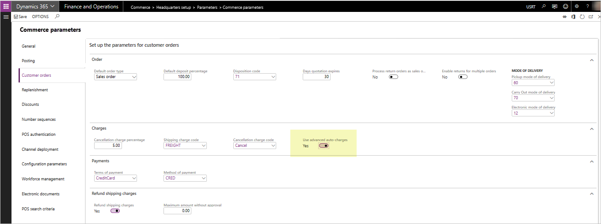
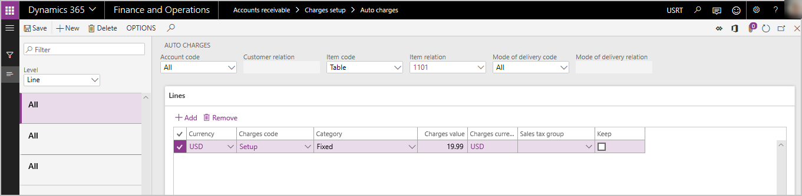

Erweiterte automatische Omni-Channel-Belastungen
Important
Dynamics 365 Retail ist jetzt Dynamics 365 Commerce und bietet umfassende Handelsfunktionen für alle Kanäle – von E-Commerce über Shops bis hin zu Callcentern. Weitere Informationen zu diesen Änderungen finden Sie unter Microsoft Dynamics 365 Commerce.
Dieses Thema enthält Informationen zur Konfiguration und Bereitstellung der erweiterten automatischen Funktionen, die in Dynamics 365 for Retail Version 10.0 verfügbar sind.
zeigenWenn die erweiterten automatische Belastungen-Funktionen aktiviert sind, können Bestellungen, die in jedem unterstützten Commerce Channel (Verkaufsstelle (POS), Callcenter und online) erstellt wurden, die Vorteile der in der ERP-Anwendung definierten automatische Belastungen -Konfiguration nutzen, die in der ERP-Anwendung sowohl für Kopf- als auch Positionsebene bezogene Gebühren definiert werden.
In Versionen vor Retail-Version 10.0 sind die Konfigurationen Automatische Belastung nur für Bestellungen zugänglich, die in E-Commerce- und Call-Center-Kanälen erstellt wurden. In den Versionen 10.0 und höher können POS-erstellte Aufträge die Konfigurationen für die automatische Belastungen nutzen. Auf diese Weise können der Verkaufstransaktion systematisch sonstige Zuschläge hinzugefügt werden.
Bei der Verwendung von Versionen vor Version 10.0 wird ein POS-Benutzer bei der Erstellung einer "Alles versenden"- oder "Auswahl versenden"-POS-Transaktion aufgefordert, manuell eine Versandgebühr einzugeben. Während die verschiedenen Belastungsfunktionen der Anwendung in Bezug darauf genutzt werden, wie die Belastungen in den Auftrag geschrieben werden, wird keine systematische Berechnung bereitgestellt – die Berechnung basiert auf der Eingabe des Benutzers, um den Wert der Belastungen zu bestimmen. Die Gebühren können nur als ein einziger "Versand"-bezogener Gebührencode hinzugefügt werden und können nach der Erstellung am POS nicht mehr einfach bearbeitet oder geändert werden.
Die Verwendung von manuellen Aufforderungen zum Hinzufügen von Versandkosten ist in den Versionen 10.0 und höher weiterhin verfügbar. Wenn eine Organisation nicht den Erweiterte Auto-Belastungen-Parameter aktiviert, bleiben die POS-Aufforderungen für die manuelle Eingabe von Belastungen identisch.
Bei der erweiterten automatische Belastungen-Funktion können POS-Benutzer systematisch alle definierten Zusatzkosten auf der Grundlage von automatische Belastungen-Einrichtungstabellen berechnen lassen. Darüber hinaus haben die Benutzer die Möglichkeit, jeder POS-Verkaufstransaktion auf Kopf- oder Positionsebene (für einen Cash-and-Carry- oder Kundenauftrag) eine unbegrenzte Anzahl von zusätzlichen Zuschlägen und Gebühren hinzuzufügen oder zu bearbeiten.
Erweiterte automatische Belastungen aktivieren
Auf der Seite Retail und Commerce> Zentralverwaltungseinrichtung >-Parameter > Commerce-Parameter wechseln Sie zur Registerkarte Debitorenaufträge. Legen Sie im Inforegister Belastungen die Option Erweiterte automatische Belastungen verwenden auf Ja fest.

Wenn erweiterte automatische Belastungen aktiviert sind, werden die Benutzer beim Erstellen eines Alles versenden- oder Auswahl versenden-Kundenauftrages nicht mehr aufgefordert, manuell eine Versandgebühr am POS-Terminal einzugeben. POS-Auftragszuschläge werden systematisch berechnet und der POS-Transaktion hinzugefügt (falls eine entsprechende Auto-Belastungstabelle gefunden wird, die dem Kriterium der zu erstellenden Bestellung entspricht). Benutzer können auch Kopf- oder Positionsebenengebühren durch neu hinzugefügte POS-Vorgänge, die den Layouts der POS-Bildschirme hinzugefügt werden können, manuell hinzufügen oder pflegen.
Wenn erweiterte automatische Belastungen aktiviert sind, werden die vorhandenen Commerce-Parameter für Code für Versandgebühren und Rückerstattung der Versandgebühren nicht mehr verwendet. Diese Parameter sind nur zutreffend, wenn der Parameter Erweiterte automatische Belastungen verwenden auf Nein festgelegt ist.
Bevor Sie diese Funktion aktivieren, stellen Sie sicher, dass Sie Ihre Mitarbeiter getestet und geschult haben, da die aktivierte Funktion den Geschäftsprozessflow der Berechnung von Versand- oder anderen Gebühren und deren Addition zu POS-Aufträgen verändert. Stellen Sie sicher, dass Sie die Auswirkungen des Prozessablaufs auf die Erstellung von Transaktionen am POS verstehen. Bei Callcenter- und E-Commerce-Aufträgen sind die Auswirkungen der Aktivierung erweiterter automatische Belastungen minimal. Call Center- und E-Commerce-Anwendungen werden weiterhin das gleiche Verhalten aufweisen, das sie in der Vergangenheit in Bezug auf die automatische Belastungen-Tabellen zur Berechnung zusätzlicher Auftragsgebühren hatten. Callcenterkanalbenutzer haben weiterhin die Möglichkeit, alle vom System berechneten automatische Belastungen auf Kopf- oder Positionsebene manuell zu bearbeiten oder weitere zusätzliche Gebühren auf Kopf- oder Positionsebene manuell hinzuzufügen.
Zusätzliche POS-Vorgänge
Damit erweiterte automatische Belastungen in Ihrer POS-Anwendungsumgebung ordnungsgemäß funktionieren, wurden neue POS-Vorgänge hinzugefügt. Diese Vorgänge müssen zu Ihren POS-Bildschirmlayouts hinzugefügt und auf den POS-Geräten bereitgestellt werden, während Sie erweiterte automatische Belastungen bereitstellen. Wenn diese Vorgänge nicht hinzugefügt werden, sind die Benutzer nicht in der Lage, verschiedene Gebühren auf den POS-Transaktionen zu verwalten oder zu pflegen, und sie haben keine Möglichkeit, die Gebührenwerte anzupassen oder zu ändern, die systematisch auf der Grundlage von Konfigurationen für automatische Belastungen berechnet werden. Es wird mindestens empfohlen, die Vorgang Belastungen verwalten in Ihrem POS-Layout einzusetzen.
Die neuen Vorgänge lauten wie folgt.
- 142 – Belastungen verwalten – Verwenden Sie diesen Vorgang, damit POS-Benutzer verschiedene Belastungen für die POS-Transaktion anzeigen und bearbeiten können, die entweder manuell oder systematisch durch die automatischen Belastungsberechnungen hinzugefügt wurden.
- 141 – Kopfzeilenbelastungen hinzufügen – Verwenden Sie diesen Vorgang, um dem Benutzer die Möglichkeit zu geben, manuell sonstige Zuschläge auf Kopfzeilenebene zu jeder POS-Verkaufstransaktion hinzuzufügen (und den zu verwendenden Belastungscode auszuwählen).
- 140 – Belastungen pro Position hinzufügen – Verwenden Sie diesen Vorgang, um dem Benutzer die Möglichkeit zu geben, manuell sonstige Zuschläge auf Positionsebene zu jeder POS-Verkaufstransaktionposition hinzuzufügen (und den zu verwendenden Belastungscode auszuwählen).
- 143 – Belastungen neu berechnen – Verwenden Sie diesen Vorgang, um eine vollständige Neuberechnung der Belastungen für die Verkaufstransaktion zu machen. Alle zuvor vom Benutzer überschriebenen automatische Belastungen werden basierend auf der aktuellen Warenkorbkonfiguration neu berechnet.
Wie bei allen POS-Vorgängen können Sicherheitskonfigurationen vorgenommen werden, die eine Genehmigung des Managers erfordern, um den Vorgang auszuführen.
Beachten Sie unbedingt, dass die oben aufgeführten POS-Vorgänge auch dann dem POS-Layout hinzugefügt werden können, wenn der Parameter Erweiterte Auto-Belastungen verwenden deaktiviert ist. In diesem Szenario erhalten Organisationen die zusätzliche Vorteile, dass sie manuell hinzugefügte Belastungen anzeigen und mithilfe der Operation Belastungen verwalten bearbeiten können. Benutzer können auch die Operationen Kopfzuschläge hinzufügen und Belastungen pro Position hinzufügen für POS-Transaktionen auch dann verwenden, wenn Erweiterte Auto-Belstungen verwenden deaktiviert ist. Die Operation Belastungen neu berechnen bietet weniger Funktionen, wenn sie bei deaktiviertem Erweiterte Auto-Belastungen verwenden verwendet wird. In diesem Szeanrio würde nichts neu berechnet und alle manuell der Transaktion hinzugefügten Belastungen würden einfach auf 0,00 US-Dollar zurückgesetzt werden.
Anwendungsbeispiele
In diesem Abschnitt werden Anwendungsbeispiele vorgestellt, die Ihnen helfen sollen, die Konfiguration und Verwendung von automatische Belastungen und sonstigen Gebühren im Rahmen von Channel-Bestellungen zu verstehen. Diese Beispiele veranschaulichen das Verhalten der Anwendung, wenn der Parameter Erweiterte Auto-Belastungen verwenden aktiviert wurde.
Beispiel für automatische Belastungen für Kopfzuschläge
Fallszenario verwenden
Ein Einzelhändler möchte automatisch Frachtkosten hinzufügen, wenn Transaktionen in einem beliebigen Comerce Channel angelegt werden, der eine Lieferung von Produkten an den Kunden erfordert. Der Einzelhändler bietet zwei Methoden der Lieferung an: Landweg und Luft. Wenn ein Kunde Transport auf dem Landweg auswählt und der Auftragswert kleiner als 100 Euro ist, möchte der Einzelhändler dem Kunden die Frachtkosten mit 10,00 Euro berechnen. Wenn der Auftrag einen Wert von über 100 Euro hat und der Kunde Transport auf dem Landweg auswählt, werden dem Kunden keine Frachtzuschlaggebühren berechnet. Wählt der Kunde für alle Bestellungen, unabhängig vom Gesamtwert, die Versandart Luft, wird eine Frachtgebühr von 20,00 Euro berechnet.
Einrichtung und Konfiguration
Dieses Szenario erfordert die Konfiguration von zwei Auto-Belastungstabellen.
Wechseln Sie zu Debitoren > Belastungen einrichten > Auto-Belastungen.
Konfigurieren Sie zwei verschiedene Auto-Zuschläge auf Kopfebene. Konfigurieren eines für die "Landwegmodus" der Lieferung und einen für den "Luftfrachtmodus" der Lieferung. Für dieses Szenario konfigurieren SIe so, dass es für "Alle Debitoren" verwendet werden kann.
Definieren Sie für die Landweg-Lieferzuschläge im Positionsbereich der Seite Auto-Belastungen eine Gebühr, die für Bestellungen zwischen ,01 Euro und 100 Euro als 10,00 Euro berechnet wird. Erstellen Sie eine weitere Zuschlagsposition, um Aufträge ab 100,01 Euro ohne Zuschläge anzugeben.

Definieren Sie für die Luftfrachtkosten im Positionsbereich des Formulars für automatische Belastungen eine Gebühr von 20,00 Euro, die auf alle Aufträge angewendet wird (zwischen einem Wert von 0,01 Euro und 9.999.999 Euro).
Senden Sie die Änderungen an die Commerce Scale Einheit/Kanal-DB, damit der POS sie nutzen kann, indem der Einzelvorgang Vertriebsplan 1040 ausgeführt wird.
Verkaufsverarbeitung für dieses Szenario
Nachdem die oben genannten Konfigurationsschritte abgeschlossen sind und die Änderungen in der Kanaldatenbank vorgenommen wurden, wird jede Kundenbestellung oder Verkaufstransaktion, die in den POS-, Callcenter- oder E-Commerce-Kanälen erstellt wurde und bei der die Landweg- oder Luftlieferungsmethoden auf Kopfebene festgelegt sind, diese Gebühren nutzen und automatisch auf den Verkauf anwenden.
Zu diesem Zeitpunkt gelten die Gebühren für alle Verkaufstransaktionen, die innerhalb der juristischen Person getätigt werden, die diese Lieferarten nutzt, da es keine Funktionalität gibt, um zu bestimmen, dass eine automatische Belastung nur für einen bestimmten Vertriebskanal gilt.
Für POS- und E-Commerce-Szenarien fallen nur dann Gebühren auf Kopfebene an, wenn alle Vertriebslinien der Transaktion auf den Versand mit genau der gleichen Lieferart eingestellt sind, da es bei diesen Aufträgen keinen klar definierten "Header" gibt. Wenn es Mischformen der Erfüllung bei den vom POS oder E-Commerce erstellten Transaktionen gibt, werden nur automatische Belastungen auf Linienebene berücksichtigt und angewendet.
In Call-Center-Szenarien hat der Benutzer die Kontrolle über die Einstellung des Liefermodus am Auftragskopf, so dass für diese Aufträge Gebühren auf Kopfebene anfallen, auch wenn einige der Vertriebslinien für eine andere Art der Lieferung konfiguriert wurden. Die Gebühren auf Kopfebene für Call-Center-Aufträge richten sich immer nach der Lieferart, die auf der Auftragskopfebene des Kundenauftrags definiert ist.
Beispiel für automatische Belastungen pro Auftragsposition
Fallszenario verwenden
Ein Einzelhändler möchte dem Kunden eine zusätzliche Belastung für Einrichtungsgebühren hinzufügen, wenn der Kunde ein bestimmtes Computermodell kauft. Dieser Computer erfordert zusätzliche, nicht optionale Einrichtungsaktionen, die der Einzelhändler für den Kunden durchführt. Der Einzelhändler hat die Kunden darüber informiert, dass für diese Einrichtung eine zusätzliche Gebühr anfällt. Der Einzelhändler bevorzugt es, die mit dieser Gebühr verbundenen Belastungen getrennt vom Produktverkaufspreis für die Finanzberichterstellung zu verwalten. Eine Einrichtungsgebühr in Höhe von 19,99 Euro wird dem Kunden berechnet, wenn dieser spezielle Computer in einem beliebigen Kanal gekauft wird.
Einrichtung und Konfiguration
Dieses Szenario erfordert die Konfiguration einer Tabelle für Auto-Belastungen auf Positionsebene.
Wechseln Sie zu Debitoren > Belastungen einrichten > Auto-Belastungen.
Stellen Sie das Dropdown-Menü Ebene auf Position ein und erstellen Sie einen neuen automatischen Belastungsdatensatz für alle Kunden und für das spezifische Produkt oder die Produktgruppe, für die die Einrichtungsgebühren berechnet werden.

Senden Sie die Belastungen an die Commerce Scale Einheit/Kanal-DB, damit der POS sie nutzen kann, indem der Einzelvorgang Vertriebsplan 1040 ausgeführt wird.
Verkaufsverarbeitung für dieses Szenario
Nachdem die oben genannten Konfigurationsschritte abgeschlossen sind und die Änderungen in der Kanaldatenbank vorgenommen wurden, löst jede Kundenbestellung oder Verkaufstransaktion, die in den POS-, Callcenter- oder E-Commerce-Kanälen erstellt wurde und diese Position in der Bestellung hat, eine Positionsbelastung aus, die systematisch zum Auftragswert hinzugefügt wird.
Zu diesem Zeitpunkt gelten die Gebühren für jede Vertriebslinie, die mit der Konfiguration der automatischen Belastung auf Positionsebene innerhalb der juristischen Person übereinstimmt, da es keine Funktionalität gibt, eine Auto-Belastung auf Positionsebene zu konfigurieren, die nur für einen bestimmten Vertriebskanal gilt.
Beispiel für manuelle Kopfgebühren
Beschreibung des Fallszenarios verwenden
Ein Einzelhändler macht nun eine Ausnahme von typischen Prozessen, indem er anbietet, einem Kunden, der Produkte in der Filiale bestellt, eine spezielle Lieferung von Produkten nach Hause anzubieten. Der Einzelhändler und der Kunde haben vereinbart, dass der Kunde eine zusätzliche Bearbeitungsgebühr von 25 Euro für diesen Service zahlt. Der Auftragserfasser muss diese zusätzliche Gebühr zur Transaktion hinzufügen. Da es sich bei der Gebühr um eine Pauschalgebühr handelt und sie sich nicht auf ein einzelnes Produkt in der Bestellung bezieht, wird eine Kopfgebühr verwendet.
Einrichtung und Konfiguration
Stellen Sie sicher, dass der Gebührencode, der in diesem Szenario verwendet wird, richtig konfiguriert wurde, indem Sie zu Debitoren > Belastungen einrichten > Belastungen gehen, um einen geeigneten Belastungscode für das Szenario zu definieren.
Wenn die Belastung als eine „versandbezogene“ Belastung angesehen werden sollte, um versandbezogene Rabatte oder Werbeaktionen zu ermöglichen, setzen Sie Versandgebühr auf dem Belastungscode auf Ja. Wenn diese Belastung auch während der Abwicklung einer Retourentransaktion in der POS-Anwendung systematisch erstattet werden darf, setzen Sie Rückerstattungsfähig auf Ja. Die Markierung Rückerstattbar gilt nur, wenn der Parameter Erweiterte Auto-Belastungen verwenden auf Ja gesetzt ist.
Senden Sie die Belastungen an die Commerce Scale Einheit/Kanal-DB, damit der POS sie nutzen kann, indem der Einzelvorgang Vertriebsplan 1040 ausgeführt wird.
Der Vorgang Kopfzuschlag hinzufügen muss in Ihrem POS-Bildschirmlayout konfiguriert sein, damit eine Schaltfläche, die für den Benutzer vom POS aus zugänglich ist, diesen Vorgang aufrufen kann (Vorgang 141). Die Änderungen des Bildschirmlayouts müssen auch über die Vertriebsplanfunktion an den Kanal verteilt werden.
Verkaufsabwicklung von manuellen Kopfbelastungen
Um das Szenario in der POS-Anwendung auszuführen, legt der POS-Benutzer die Verkaufstransaktion wie gewohnt an und fügt die Produkte und alle anderen Konfigurationen dem Verkauf hinzu. Vor dem Einzug der Zahlung sollte der Benutzer den Vorgang Kopfbelastung hinzufügen ausführen, die den Benutzer auffordert, einen Code für Belastungen auszuwählen und den Gebührenwert einzugeben. Sobald der Benutzer den Prozess abgeschlossen hat, wird die Belastung dem Kundenauftrag als Belastung auf Kopfebene hinzugefügt.
Dieser Prozess kann im Call Center angewendet werden, indem Sie die vorhandene Funktion Belastungen auf der Registerkarte Verkaufen in der Symbolleiste verwenden. Auf der Seite Belastungen verwalten kann der Benutzer dem Auftragskopf eine neue Zuschlagsposition hinzufügen.
Beispiel für manuelle Belastungen pro Position
Fallszenario verwenden
Ein Kunde verlangt, dass zwei der fünf Artikel seines Auftrags als Geschenk verpackt werden. Der Einzelhändler bietet diesen optionalen Service gegen eine Gebühr von 2,00 Euro pro Artikel an. Der Auftragserfasser muss diese Gebühren zu den entsprechenden Artikeln hinzufügen, die als Geschenk verpackt werden müssen.
Einrichtung und Konfiguration
Stellen Sie sicher, dass der Gebührencode, der in diesem Szenario verwendet wird, richtig konfiguriert wurde, indem Sie zu Debitoren > Belastungen einrichten > Belastungen gehen, um einen geeigneten Belastungscode für das Szenario zu definieren.
Wenn die Belastung als eine "versandbezogene" Belastung angesehen werden sollte, um versandbezogene Rabatte oder Werbeaktionen zu ermöglichen, setzen Sie die Versandgebühr auf dem Belastungscode auf Ja. Wenn die Belastung auch während der Abwicklung einer Retourentransaktion in der POS-Anwendung systematisch erstattet werden darf, setzen Sie Rückerstattungsfähig auf Ja. Die Markierung Rückerstattbar gilt nur, wenn der Parameter Erweiterte Auto-Belastungen verwenden auf Ja gesetzt ist.
Senden Sie die Belastungen an die Commerce Scale Einheit/Kanal-DB, damit der POS sie nutzen kann, indem der Einzelvorgang Vertriebsplan 1040 ausgeführt wird.
Der Vorgang Belastungen pro Position hinzufügen muss in Ihrem POS-Bildschirmlayout konfiguriert sein, damit eine Schaltfläche, die für den Benutzer vom POS aus zugänglich ist, diesen Vorgang aufrufen kann (Vorgang 140). Die Änderungen des Bildschirmlayouts müssen auch über die Vertriebsplanfunktion an den Kanal verteilt werden.
Verkaufsabwicklung von manuellen Positionsbelastungen
Um das Szenario in der POS-Anwendung auszuführen, legt der POS-Benutzer die Verkaufstransaktion wie gewohnt an und fügt die Produkte und alle anderen Konfigurationen dem Verkauf hinzu. Vor dem Einzug der Zahlung sollte der Benutzer in der Anzeige der POS-Artikelliste die spezifische Position auswählen, in der die Gebühr anfällt, und den Vorgang Positionsbelastung ausführen. Der Benutzer wird aufgefordert, einen Belastungscode auszuwählen und den Zuschlagswert einzugeben. Sobald der Benutzer den Prozess abgeschlossen hat, wird die Belastung mit der Position verknüpft und als Positionsbelastung zum Auftragswert addiert. Der Benutzer kann den Vorgang wiederholen, um bei Bedarf zusätzliche Positionsbelastungen zu anderen Positionen der Transaktion hinzuzufügen.
Der gleiche Prozess kann im Call Center über die Funktion "Belastungen verwalten" im Dropdown-Menü Finanzen im Abschnitt Auftragspositionen auf der Seite Auftrag angewendet werden. Durch die Auswahl dieser Option wird die Seite Belastungen verwalten geöffnet, auf der der Benutzer eine neue positionsspezifische Belastung der Transaktion hinzufügen kann.
Zusätzliche Funktionen
Bearbeiten von Belastungen für eine POS-Verkaufstransaktion
Der Vorgang (142) Belastungen verwalten sollte dem Layout des POS-Bildschirms hinzugefügt werden, damit ein Benutzer alle vom System berechneten oder manuell erstellten Kopf- oder Positionsbelastungen anzeigen und bearbeiten oder überschreiben kann. Wenn der Vorgang nicht hinzugefügt wird, können die Benutzer weder den Wert der Belastung auf der POS-Transaktion anpassen noch die Details der Belastungen einsehen, wie z.B. die Art des an die Belastung gebundenen Belastungscodes.
Auf der Seite Belastungen verwalten am POS kann der Benutzer sowohl Kopf- als auch Positionsbelastungen anzeigen. Der Benutzer kann die auf dieser Seite verfügbare Funktion Bearbeiten nutzen, um den Betrag für eine bestimmte Belastungsposition zu ändern. Sobald eine Gebührenzeile manuell überschrieben wurde, wird sie nicht mehr systematisch neu berechnet, es sei denn, der Benutzer leitet den Vorgang Belastungen neu berechnen ein.
Wenn der Belastungsüberschreibungscode auf der Einrichtungsseite Commerce Parameter konfiguriert wurde, wird der Benutzer aufgefordert, einen Ursachencode anzugeben, wenn die Belastungen in der POS-Anwendung geändert wurden.
Wenn Ursachencodes für überschriebene Belastungen erfasst wurden, steht auch ein neuer Bericht zur Verfügung, um diese Überschreibungen zu überprüfen und zu überwachen. Der Bericht kann in Retail und Commerce > Abfragen und Berichte > Verlauf für Belastungsüberschreibung gefunden werden.
Rückerstattung der Belastungen bei einer POS-Retourenbuchung
Wenn der Parameter Erweiterte Auto-Belastungen verwenden auf Ja gesetzt ist, entfällt der bestehende Commerce Parameter für Rückerstattung der Versandgebühren. Um anzugeben, welche Gebühren einem Kunden bei der Verwendung von erweiterten automatischen Belastungen systematisch erstattet werden sollen, stellen Sie sicher, dass der zugehörige Belastungscode auf der Einrichtungsseite Belastungscode als Rückerstattungsfähig konfiguriert wurde. Stellen Sie sicher, dass die Einstellungen mit Ihren Commerce-Kanaldatenbanken durch die Verarbeitung des Vertriebsplans synchronisiert wurden.
Rückerstattung der Belastungen bei einer Rücklieferungstransaktion
Belastungen werden nicht systematisch an Rücklieferungen erstattet, die in Commerce erstellt wurden. Benutzer müssen beim Erstellen der Rücklieferungen die Option Belastungen kopieren auswählen. Wenn Belastungen kopieren nicht ausgewählt ist, werden Gebühren aus der ursprünglichen Verkaufstransaktion nicht automatisch erstattet. Wenn Belastungen kopieren ausgewählt ist, werden alle Belastungen in den Rücklieferungsauftrag kopiert und der Benutzer kann alle Beastungen, die er nicht zurückerstattet haben möchte, manuell bearbeiten oder entfernen. Der Rückerstattungsprozess des Call Centers bestätigt derzeit nicht das Kennzeichen Rückerstattungsfähig in der Einrichtung des Belastungscodes.
Konfigurieren von POS-Bons zur Anzeige von Belastungen
Die folgenden Bon-Elemente wurden der Zugangsposition und -fußzeile hinzugefügt, um die erweiterte automatischen Belastungsfunktionalität zu unterstützen.
- Versandgebühren – Position – Dieses Positionselement kann verwendet werden, um bestimmte Belastungscodes, die auf die Verkaufsposition angewendet wurden, wieder zusammenzufassen. Es werden nur Codes für Belastungen angezeigt, die auf der Seite Codes für Belastungen als Versand-Belastungen gekennzeichnet sind.
- Andere Belastungen – Position – Dieses Positionselement kann verwendet werden, um alle nicht versandbezogenen Belastungscodes, die auf die Verkaufsposition angewendet wurden, wieder zusammenzufassen. Dies sind Belastungscodes, bei denen das Kennzeichen Versand auf der Seite Belastungscode nicht aktiviert wurde.
- Details zu Versandgebühren – Auftrag – Dieses Element auf der Fußzeile zeigt die Beschreibungen der für die Bestellung angewandten Belastungscodes an, die als Versand-Gebühren auf der Einrichtungsseite Belastungscode gekennzeichnet wurden.
- Versandgebühren – Auftrag – Dieses Element auf Fußzeilenebene zeigt den Dollarwert der versandbezogenen Belastungen an.
- Details zu anderen Belastungen – Auftrag – Dieses Element auf der Fußzeile zeigt die Beschreibung der für die Bestellung angewandten Belastungscodes an, die nicht als versandbezogene Belastungen gekennzeichnet sind.
- Andere Kosten – Auftrag – Dieses Element auf Fußzeilenebene zeigt den Dollarwert der nicht versandbezogenen Belastungen an.
Es wird empfohlen, dass das Unternehmen auch Freitextfelder in die Fußzeile des Belegs einfügt, um die Bereiche zu definieren, in denen Belastungen wieder zusammengefasst werden.
Verhindern, dass Belastungen berechnet werden, bis der POS-Auftrag abgeschlossen ist.
Einige Unternehmen ziehen es möglicherweise vor, zu warten, bis der Benutzer alle Verkaufspositionen zur POS-Transaktion hinzugefügt hat, bevor sie Belastungen berechnen. Um zu verhindern, dass Belastungen berechnet werden, wenn Artikel zur POS-Transaktion hinzugefügt werden, aktivieren Sie den Parameter Manuelle Belastungsberechnung im vom Shop verwendeten Funktionsprofil. Wenn Sie diesen Parameter aktivieren, muss der POS-Benutzer den Vorgang Summen berechnen verwenden, wenn er die Produkte zur POS-Transaktion hinzugefügt hat. Der Vorgang Summen berechnen löst dann die Berechnung der Auto-Belastungen für den Auftragskopf oder die entsprechenden Positionen aus.
Belastungen setzen Berichte außer Kraft
Wenn Benutzer die berechneten Belastungen manuell überschreiben oder der Transaktion manuell eine Belastung hinzufügen, sind diese Daten zur Überprüfung im Bericht Historie für Belastungsüberschreibung verfügbar. Der Bericht kann in Retail und Commerce > Abfragen und Berichte > Verlauf für Belastungsüberschreibung angezeigt werden. Beachten Sie unbedingt, dass die für diesen Bericht erforderlichen Daten durch die "P"-Verteilungs-Zeitplaneinzelvorgänge aus der Kanaldatenbank in die Hauptniederlassung importiert werden. Daher sind Informationen zu Überschreibungen, die soeben im POS ausgeführt wurden, möglicherweise nicht sofort in diesem Bericht verfügbar, bis dieser Einzelvorgang die Transaktionsdaten des Stores zur Hauptniederlassung hochgeladen hat.
Zusätzliche Ressourcen
Automatische Belastungen nach Kanal aktivieren und konfigurieren
Kopfbelastungen auf übereinstimmende Verkaufspositionen aufteilen